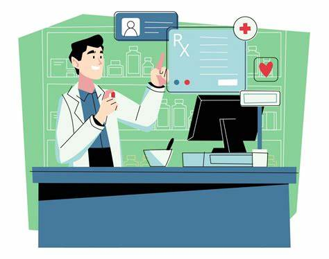

SMPS

LOG IN
NAME:
ENTER PASSWORD:
click to sign up
overview
Welcome to the service model.This is a project created inorder to make sufficiient use of the technology to provide citizens to get an adecute medical serivice especilaay for senior citizens as well as concieved mothers.